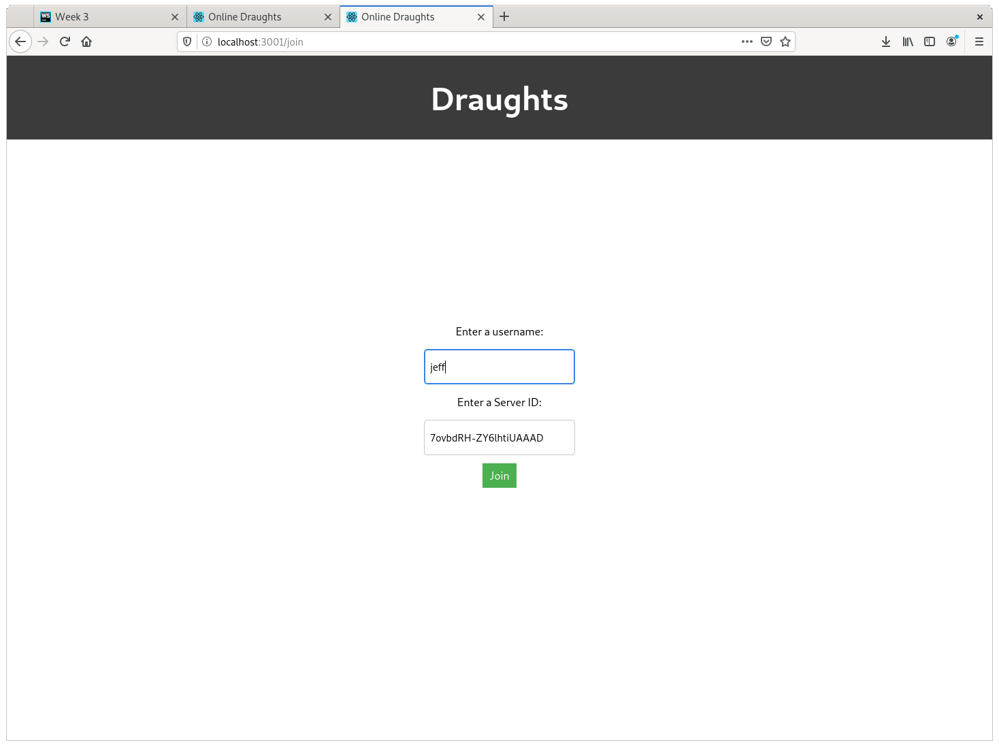

Week 3 - Learning JavaScript And Creating A Chat Application
Learning JavaScript
This week I learnt JavaScript. JavaScript is developed to add interactivity to websites. It is predominantly a client-side programming language, however it can also be used as a server-side language as you will see later.
JavaScript has both Object Oriented and functional programming features. In JavaScript everything is modelled as objects. Functions are modelled as objects and you can attach properties to them, which means you can associate static variables to functions.
To learn JavaScript I read 'JavaScript The Definitive Guide' which guides you through the language and also introduces you to how you can use the language to manipulate elements on a web page. To make use of the language requires knowledge of HTML and CSS. JavaScript, HTML and CSS are the three main languages used today to develop web sites.

Node.JS, React.JS and Socket.IO
Node.JS
As I explained before JavaScript is predominantly a client-side programming language which is interpreted by the web browser. However Node.JS allows JavaScript to be executed outside the browser environment. Which allows JavaScript to be executed on a server which is convenient for web development as it means both the client and server can be created in the same programming language. This week I used Node.JS and the Socket.IO framework to produce a backend for the application.
React.JS
React.JS is a framework for single page web applications. Single page web applications are web applications in which components can be loaded and removed without the user having to reload the page. This makes a web page dynamic and responsive. React.JS is maintained by FaceBook and is an in demand skill with regards to front end web development.
Socket.IO
Socket.IO is a framework which allows realtime communication between the client and a server via web sockets. Web sockets is a technology that allows two-way communications between a client and a server. The server can broadcast messages to a client, and a client can broadcast messages to a server. Socket.IO makes it incredibly easy to develop a responsive backend for a website as it works by emitting events between the client and server. The client and the server listen out for events and when certain events are triggered the client or the server responds accordingly.
My Chat Application
Above is the main menu of the application I developed this week. As you can see you can either join a game or create a game. When creating a game you are presented with a text box to enter your username.
Now when you create the server you are essentially creating a 'room'. A room is a shared socket between multiple clients. This means you can broadcast information to users who share the same socket. This means you can have multiple instances of a game taking place on the same server.
Above the Draughts board are two elements. The first is the game code which other people use to connect to the game, the second is a list of servers on the game. As you can see only one person is connected to the server and that is the host.
Now when I access the web page as a new client and press the join game button I am presented with a screen which asks me to enter a username and a server ID.
Now when joining the game and switching back to the other client you can see the list of Users has been updated. Additionally the clients can communicate with one another.
Thats It!
I am afraid that is all I have done this week. I quite enjoyed creating the application this week as I have never done any server-side scripting before. Socket.IO made it incredibly easy to do this and I would encourage anyone who is looking to create a backend for a website to look into it.
Next week I aim to produce a fully working draughts game so that people can play draughts against each other in a very primitive way over the internet.